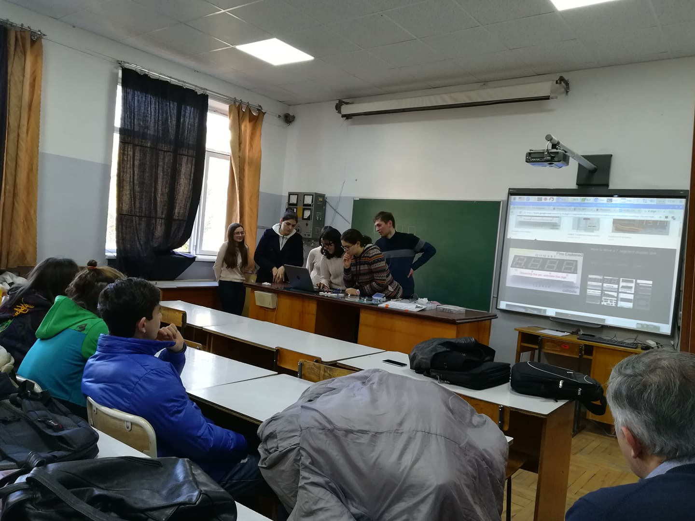
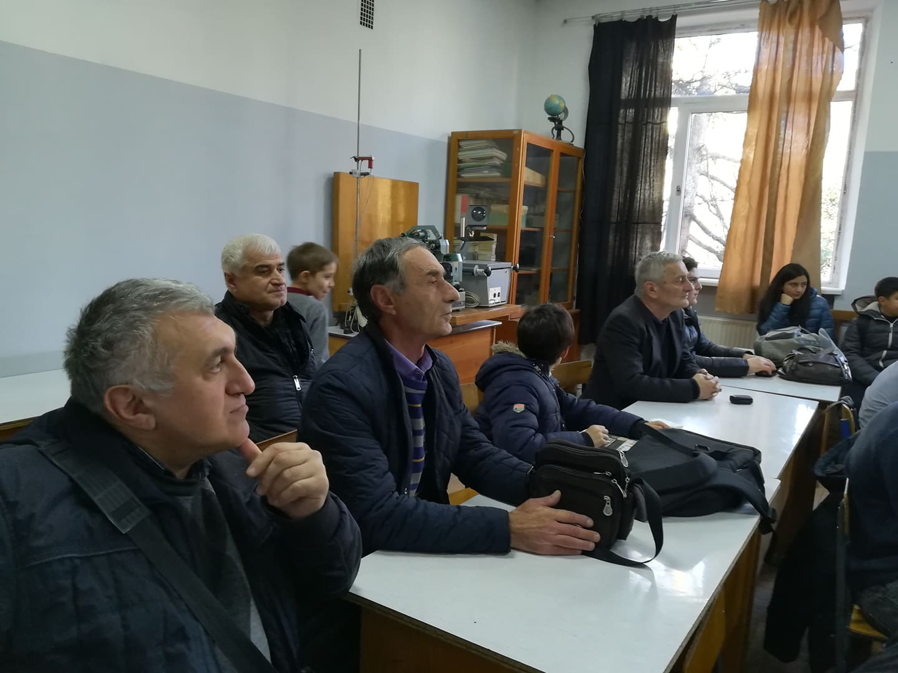
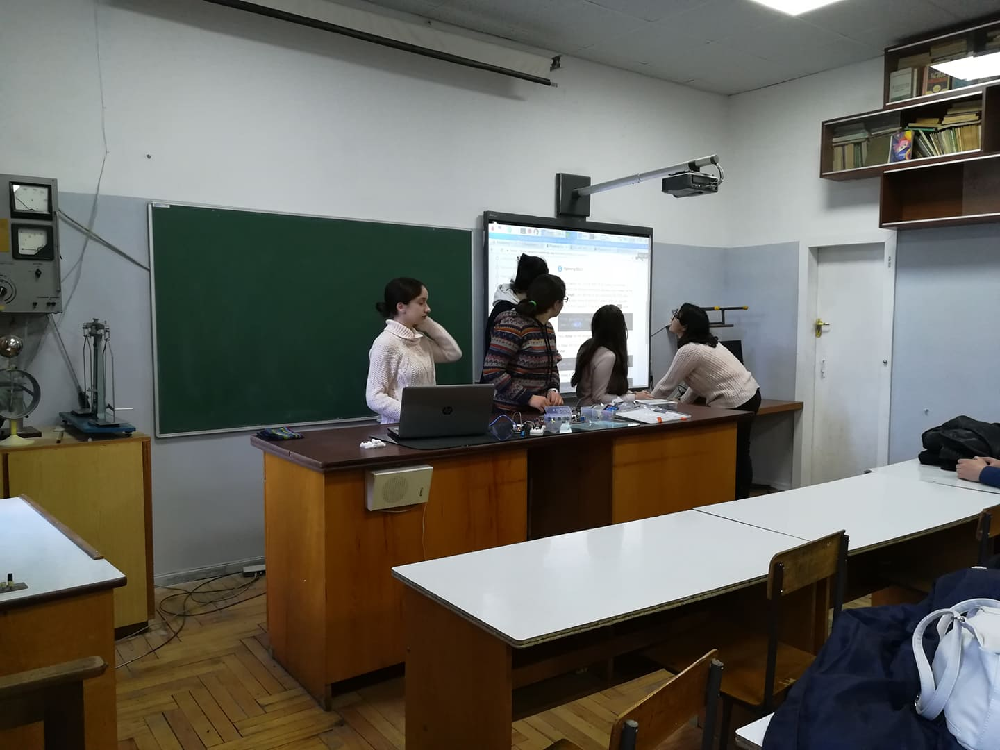
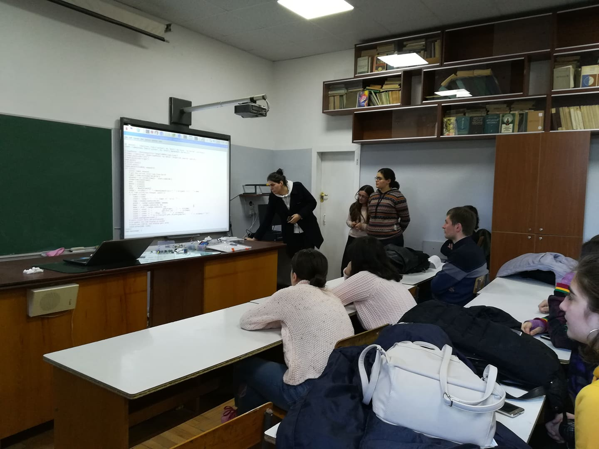
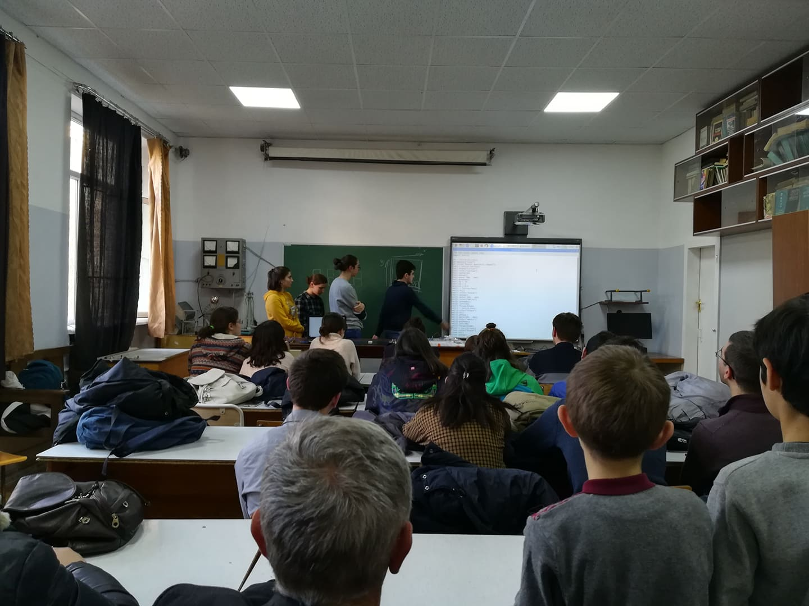

ჟაუტიკოვის რიგით მე-15 საერთაშორისო ოლიმპიადა წელს კომაროვის სკოლისთვის განსაკუთრებით წარმატებული აღმოჩნდა. მონაწილეობას 16 სახელმწიფოს 70-მდე გუნდი იღებდა, სადაც ორი გუნდი კომაროვის სკოლის სახელით იყო წარდგენილი. ინდივიდუალურ შეჯიბრში კი მონაწილეობას 529 მონაწილე იღებდა. კომაროვის სკოლის მოსწავლეებმა 4 ოქროს, 2 ვერცხლის და 2 ბრინჯაოს მედალი მოიპოვეს. სკოლის გუნდმა მეორე საპრიზო ადგილი და რეიტინგით მე-3 ადგილი დაიკავა. გუნდის ლიდერები იყვნენ გიორგი არაბიძე და თეიმურაზ კალატოზი. ინდივიდუალურ შეჯიბრში კი სკოლის მოსწავლეთა შედეგბი შემდეგნაირია: ნიკოლოზ ბირკაძე - ინფორმატიკა, ოქროს მედალი; ლუკა მუშკუდიანი - მათემატიკა, ოქროს მედალი; ბაქარ გამეზარდაშვილი - მათემატიკა, ოქროს მედალი; ალექსანდრე მერაბიშვილი - ფიზიკა, ოქროს მედალი; თეიმურაზ თოლორაია - ინფორმატიკა, ვერცხლის მედალი; ლაშა კოროშინაძე - ფიზიკა, ვერცხლის მედალი; გიორგი გოგაბერიშვილი - ფიზიკა, ბრინჯაოს მედალი; დავით ხვედელიძე - მათემატიკა, ბრინჯაოს მედალი. გთავაზობთ ინტერვიუს ოლიმპიადის ერთ-ერთ მონაწილესთან, რომელიც ერთადერთია იმ 529 მონაწილიდან, რომელმაც ინფორმატიკის განხრით 600 შესაძლო ქულიდან 600 ქულა დააგროვა.
რამ გამოიწვია შენი დაინტერესება ინფორმატიკაში?
- პირველად მეოთხე კლასში მივიღე მონაწილეობა ოლიმპიადაში სახელად "იმედი ხვალის", რომელსაც საინფორმაციო ტექნოლოგიების ცენტრი "მზიური" ატარებდა. საბედნიეროდ ამ ოლიმპიადაზე წარმატების მიღწევის შემდეგ მათ თავად მიმიწვიეს თავიანთ ცენტრში სასწავლებლად. ამის შემდეგ აქტიურად დავიწყე ინფორმატიკის შესწავლა და ღრმა ინტერესი გამიჩნდა ამ საგნის მიმართ.
რამდენ დროს უთმობ დღის განმავლობაში მეცადინეობას?
- ორივე საგანს, მატემატიკას და ინფორმატიკას, დღეში რამდენიმე საათს ვუთმობ. ვფიქრიბ, აუცილებელია გამოყო დღეში რამდენიმე საათი იმ საგნისთვის, რომელშიც წარმატების მიღწევა გინდა.
რამდენად რთულია ფსიქოლოგიურად საერთაშორისო ოლიმპიადაში მონაწილეობა?
- რა თქმა უნდა! როდესაც პირველად მოვხვდი საერთაშორისო ოლიმპიადაზე ძალიან რთული იყო და ბევრი ვინერვიულე. მაგრამ ვინაიდან წელს გამოცდილება მქონდა ნერვიულობის ფაქტორს დიდად არ შევუწუხებივარ , ვფიქრობ ამან ხელი შემიწყო წარმატების მიღწევაში.
ვინ ან რამშეგიწყო ხელი ამ წარმატების მიღწევაში?
- ვფიქრობ პირველ რიგში საკუთარი თავია ის ვინც ყველაზე მეტად გეხმარება წარმატების მიღწევაში. გამორჩეულად სხვა არაფერი დამხმარებია, მაგრამ რა თქმა უნდა ჩემს მასწავლებლებსაც წვლილი მიუძღვით ჩემს წარმატებაში.
როგორც ვიცით, შენი უფროსი ძმაც იყო საერთაშორისო ოლიმპიადაზე ბიოლოგიის განხრით. იყო თუ არა ეს სტიმული შენთვის?
- გარკვეულწილად ალბათ იყო სტიმული, მაგრამ ვერ ვიტყვი რომ მთავარი მოტივაცია ეს გახლდათ. ყოველთვის ვშრომობდი და ვმეცადინეობდი იმისთვის, რომ წარმატებისთვის მიმეღწია.
ტრადიციულად უნდა გკითხო, თუ რას ურჩევდი მომავალ თაობას იმისთვის, რომ წარმატებას მიაღწიოს?
- ვურჩევ, რომ ბევრი იმეცადინონ და იშრომონ თავიანთი მიზნის მისაღწევად. სიზარმაცე მათ არაფერში გამოადგებათ. არსებობს ბევრი ნიჭიერი, მაგრამ ზარმაცი ადამიანი. მათზე დიდ წარმატებას კი ყოველთვის ნაკლებად ნიჭიერი, მაგრამ შრომისმოყვარე ადამიანები აღწევენ.
    თებერვალი, 2019
გამოცემა N2
ავტორი: მარიამ ჩხეიძე